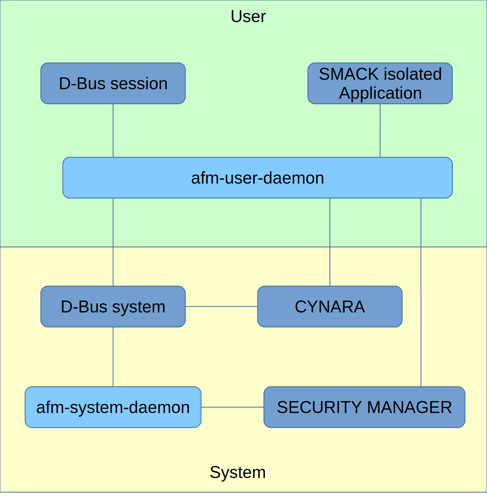

The application framework daemons
Foreword
This document describes application framework daemons
FCS (Fully Conform to Specification) implementation is still under development.
It may happen that current implementation somehow diverges with specifications.
Introduction
Daemons afm-user-daemon and afm-system-daemon handle applications
life.
Understand that they will manage operations like:
- installation
- uninstallation
- running
- suspend
- inventory
- ...
In addition, they ensure that operations use the security framework as needed and that applications are executed in the correct context.
D-Bus is in charge of transmitting orders to the appropriate daemon depending upon D-Bus destination.
The figure below summarizes the situation of both afm-system-daemon and afm-user-daemon in the system.
{style width:65%;}
The D-Bus interface
Overview of the dbus interface
The afm daemons takes theirs orders from the session instance
of D-Bus.
The use of D-Bus is great because it allows to implement
discovery and signaling.
The dbus session is by default addressed by environment variable DBUS_SESSION_BUS_ADDRESS. Using systemd variable DBUS_SESSION_BUS_ADDRESS is automatically set for user sessions.
They are listening with the destination name org.AGL.afm.[user|system] at the object of path /org/AGL/afm/[user|system] on the interface org.AGL.afm.[user|system] for the below detailed members for the afm-system-daemon:
- install
- uninstall
And for afm-user-daemon:
- runnables
- detail
- start
- once
- terminate
- pause
- resume
- runners
- state
- install
- uninstall
D-Bus is mainly used for signaling and discovery.
Its optimized typed protocol is not used except for transmitting
only one string in both directions.
The client and the service are using JSON serialization to
exchange data.
Signature of any member of the D-Bus interface is
string -> string for JSON -> JSON.
This is the normal case, if there is an error, current implementation
returns a dbus error that is a string.
Here are examples using dbus-send, here to install an application from a widget file:
dbus-send --session --print-reply \
--dest=org.AGL.afm.system \
/org/AGL/afm/system \
org.AGL.afm.system.install 'string:"/tmp/appli.wgt"
And here, to query data on installed applications that can be run:
dbus-send --session --print-reply \
--dest=org.AGL.afm.user \
/org/AGL/afm/user \
org.AGL.afm.user.runnables string:true
The protocol over D-Bus
On all following sub-chapters we assume that we talk about either afm-system-daemon or afm-user-daemon. Method and D-Bus parameters are considered as self-explanatory.
The D-Bus interface is defined by:
- DESTINATION: org.AGL.afm.[user|system]
- PATH: /org/AGL/afm/[user|system]
- INTERFACE: org.AGL.afm.[user|system]
Method org.AGL.afm.system.install
Description: Install an application from a widget file.
When an application with the same id and version already exists. Outside of using force=true the application is not reinstalled.
Applications are installed the subdirectories of applications common directory. If root is specified, the application is installed under the sub-directories of the root defined.
Note that this methods is a simple accessor method of org.AGL.afm.system.install from afm-system-daemon.
After the installation and before returning to the sender, afm-system-daemon sends a signal org.AGL.afm.system.changed.
Input: The path of the widget file to install and, optionally, a flag to force reinstallation, and, optionally, a root directory.
Either just a string being the absolute path of the widget file:
"/a/path/driving/to/the/widget"
Or an object:
{
"wgt": "/a/path/to/the/widget",
"force": false,
"root": "/a/path/to/the/root"
}
"wgt" and "root" must be absolute paths.
output: An object with the field "added" being the string for the id of the added application.
{"added":"appli@x.y"}
Method org.AGL.afm.system.uninstall
Description: Uninstall an application from its id.
Note that this methods is a simple method accessor of org.AGL.afm.system.uninstall from afm-system-daemon.
After the uninstallation and before returning to the sender, afm-system-daemon sends a signal org.AGL.afm.system.changed.
Input: the id of the application and optionally the application root path.
Either a string:
"appli@x.y"
Or an object:
{
"id": "appli@x.y",
"root": "/a/path/to/the/root"
}
output: the value 'true'.
Method org.AGL.afm.user.detail
Description: Get details about an application from its id.
Input: the id of the application as below.
Either just a string:
"appli@x.y"
Or an object having the field "id" of type string:
{"id":"appli@x.y"}
Output: A JSON object describing the application containing the fields described below.
{
"id": string, the application id (id@version)
"version": string, the version of the application
"width": integer, requested width of the application
"height": integer, requested height of the application
"name": string, the name of the application
"description": string, the description of the application
"shortname": string, the short name of the application
"author": string, the author of the application
}
Method org.AGL.afm.user.runnables
Description: Get the list of applications that can be run.
Input: any valid json entry, can be anything except null.
output: An array of description of the runnable applications. Each item of the array contains an object containing the detail of an application as described above for the method org.AGL.afm.user.detail.
Method org.AGL.afm.user.install
Description: Install an application from its widget file.
If an application of the same id and version exists, it is not reinstalled except when force=true.
Applications are installed in the subdirectories of the common directory reserved for applications. If root is specified, the application is installed under sub-directories of defined root.
Note that this methods is a simple accessor to the method org.AGL.afm.system.install of afm-system-daemon.
After the installation and before returning to the sender, afm-user-daemon sends the signal org.AGL.afm.user.changed.
Input: The path of widget file to be installed. Optionally, a flag to force reinstallation and/or a root directory.
Simple form a simple string containing the absolute widget path:
"/a/path/driving/to/the/widget"
Or an object:
{
"wgt": "/a/path/to/the/widget",
"force": false,
"root": "/a/path/to/the/root"
}
wgt and root MUST be absolute paths.
output: An object containing field "added" to use as application ID.
{"added":"appli@x.y"}
Method org.AGL.afm.user.uninstall
Description: Uninstall an application from its id.
Note that this methods is a simple accessor to org.AGL.afm.system.uninstall method from afm-system-daemon.
After the uninstallation and before returning to the sender, afm-user-daemon sends the signal org.AGL.afm.user.changed.
Input: the id of the application and, optionally, the path to application root.
Either a string:
"appli@x.y"
Or an object:
{
"id": "appli@x.y",
"root": "/a/path/to/the/root"
}
output: the value 'true'.
Method org.AGL.afm.user.start
Description:
Input: the id of the application and, optionally, the start mode as below.
Either just a string:
"appli@x.y"
Or an object containing field "id" of type string and optionally a field mode:
{"id":"appli@x.y","mode":"local"}
The field "mode" is a string equal to either "local" or "remote".
[Currently the mode is not available in the systemd version]
output: The runid of the application launched. runid is an integer.
Method org.AGL.afm.user.once
Description:
Input: the id of the application
Either just a string:
"appli@x.y"
Or an object containing field "id" of type string.
{"id":"appli@x.y"}
output: The state of the application retrieved or launched. See org.AGL.afm.user.state to get a description of the returned object.
Method org.AGL.afm.user.terminate
Description: Terminates the application attached to runid.
Input: The runid (an integer) of running instance to terminate.
output: the value 'true'.
Method org.AGL.afm.user.stop
Obsolete since 8th November 2016 (2016/11/08). Kept for compatibility.
Use org.AGL.afm.user.pause instead.
Method org.AGL.afm.user.continue
Obsolete since 8th November 2016 (2016/11/08). Kept for compatibility.
Use org.AGL.afm.user.resume instead.
Method org.AGL.afm.user.pause
[Currently not available in the systemd version]
Description: Pauses the application attached to runid until terminate or resume.
Input: The runid (integer) of the running instance to pause.
output: the value 'true'.
Method org.AGL.afm.user.resume
[Currently not available in the systemd version]
Description: Resumes the application attached to runid previously paused.
Input: The runid (integer) of the running instance to resume.
output: the value 'true'.
Method org.AGL.afm.user.state
Description: Get information about a running instance of runid.
Input: The runid (integer) of the running instance inspected.
output: An object describing instance state.
It contains:
- the runid (integer)
- the pids of the processes as an array starting
- with the group leader
- the id of the running application (string)
- the state of the application (string either: "starting", "running", "paused").
Example of returned state:
{
"runid": 2,
"pids": [ 435, 436 ],
"state": "running",
"id": "appli@x.y"
}
Method org.AGL.afm.user.runners
Description: Get the list of currently running instances.
Input: anything.
output*: An array of states, one per running instance, as returned by the method org.AGL.afm.user.state***.
Starting afm daemons
afm-system-daemon and afm-user-daemon are launched as systemd
services attached to system and user respectively.
Normally, service files are locatedat /lib/systemd/system/afm-system-daemon.service and
/usr/lib/systemd/user/afm-user-daemon.service.
afm-system-daemon options
The options for launching afm-system-daemon are:
-r
--root directory
Set the root application directory.
Note that the default root directory is defined
to be /usr/share/afm/applications (may change).
-d
--daemon
Daemonizes the process. It is not needed by systemd.
-q
--quiet
Reduces the verbosity (can be repeated).
-v
--verbose
Increases the verbosity (can be repeated).
-h
--help
Prints a short help.
afm-user-daemon options
The options for launching afm-user-daemon are:
-a
--application directory
[Currently not available in the systemd version]
Includes the given application directory to
the database base of applications.
Can be repeated.
-r
--root directory
[Currently not available in the systemd version]
Includes root application directory or directories when
passing multiple rootdir to
applications database.
Note that default root directory for
applications is always added. In current version
/usr/share/afm/applications is used as default.
-m
--mode (local|remote)
[Currently not available in the systemd version]
Set the default launch mode.
The default value is 'local'
-d
--daemon
Daemonizes the process. It is not needed by systemd.
-q
--quiet
Reduces the verbosity (can be repeated).
-v
--verbose
Increases the verbosity (can be repeated).
-h
--help
Prints a short help.
Tasks of afm-user-daemon
Maintaining list of applications
At start afm-user-daemon scans the directories containing applications and load in memory a list of available applications accessible by current user.
When afm-system-daemon installs or removes an application.
On success it sends the signal org.AGL.afm.system.changed.
When receiving such a signal, afm-user-daemon rebuilds its
applications list.
afm-user-daemon provides the data it collects about
applications to its clients.
Clients may either request the full list
of available applications or a more specific information about a
given application.
Launching application
afm-user-daemon launches application by using systemd. Systemd builds a secure environment for the application before starting it.
Once launched, running instances of application receive
a runid that identify them.
To make interface with systemd evident, the pid is the runid.
Managing instances of running applications
afm-user-daemon manages the list of applications that it launched.
When owning the right permissions, a client can get the list
of running instances and details about a specific
running instance.
It can also terminate a given application.
Installing and uninstalling applications
If the client own the right permissions, afm-user-daemon delegates that task to afm-system-daemon.
Using afm-util
The command line tool afm-util uses dbus-send to send
orders to afm-user-daemon*.
This small scripts allows to send command to afm-user-daemon*** either
interactively at shell prompt or scriptically.
The syntax is simple:
- it accept a command and when requires attached arguments.
Here is the summary of afm-util:
-
afm-util runnables :
list the runnable widgets installed -
afm-util install wgt :
install the wgt file -
afm-util uninstall id :
remove the installed widget of id -
afm-util detail id :
print detail about the installed widget of id -
afm-util runners :
list the running instance -
afm-util start id :
start an instance of the widget of id -
afm-util once id :
run once an instance of the widget of id -
afm-util terminate rid :
terminate the running instance rid -
afm-util state rid :
get status of the running instance rid
Here is how to list applications using afm-util:
afm-util runnables